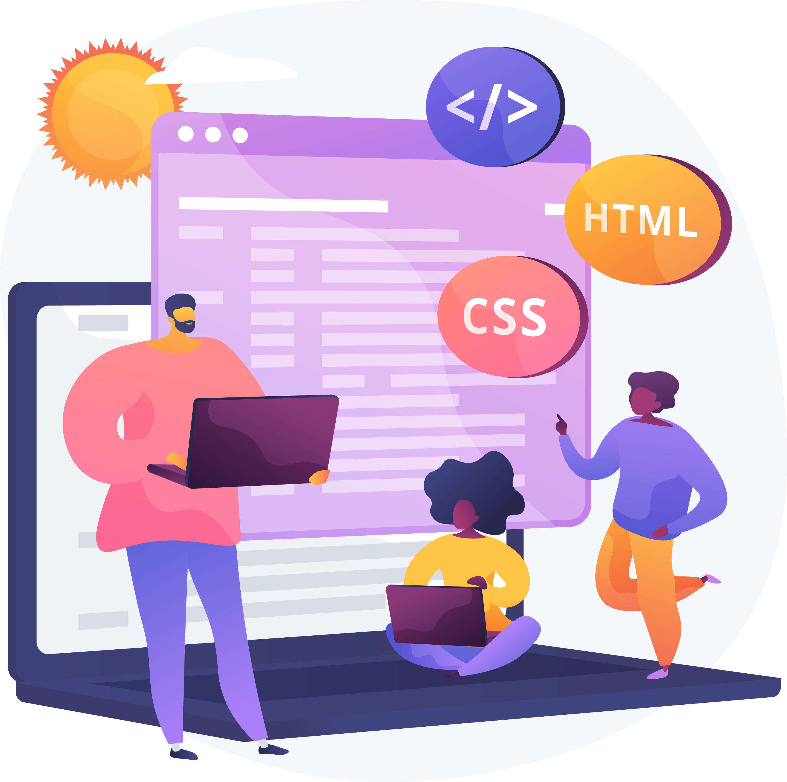

|
Desenvolvedor |
|
Sou o Gabriel Marciel, um entusiasta da programação que encontrou sua verdadeira paixão no mundo do desenvolvimento web. Atualmente, estou matriculado no curso de Front-End do SENAI, e devo dizer que estou completamente envolvido nas oportunidades e desafios que essa área oferece. Desde o início do curso, tenho dedicado tempo e esforço para absorver ao máximo os conhecimentos, participando ativamente e entregando trabalhos de qualidade. O curso de Front-End do SENAI tem sido uma jornada incrível para mim, proporcionando não apenas uma base teórica sólida, mas também experiências práticas que fazem toda a diferença. Estou encantado com a possibilidade de aplicar os conhecimentos adquiridos em projetos reais, tornando o aprendizado mais significativo e aplicável ao mundo profissional. Não posso deixar de mencionar a qualidade excepcional do professor Anthony Freitas, profissional experiente na indústria que têm sido fundamental para o meu desenvolvimento. A interação próxima com esse especialista tem me proporcionado insights valiosos sobre as tendências do mercado de trabalho e as habilidades essenciais para me destacar como um desenvolvedor Front-End competente. Com uma mentalidade proativa e o apoio sólido do SENAI, estou otimista em relação ao meu futuro nesta área empolgante e mal posso esperar para continuar minha jornada de aprendizado e crescimento profissional. |
Projetos |
 |
Página Brasileirão |
|
Home-Page de um Negócio Local |
|
Home-Page empreendimento do aluno |
|
One page de Calculadora |
|
Calculadora IMC |
|
Conversor de Moedas |
|
Landing Page com React |
|
Gabriel Marciel
Analista de Ti
|
Habilidades |
Sou um profissional de tecnologia experiente com habilidades em criação de sites, gerenciamento de redes sociais, Microsoft Office 365, Microsoft Power BI, Microsoft Power Query, Ap Unifi, DaVinci Resolve, Adobe Audition, atendimento ao cliente, análise de dados, Adobe Creative Suite, relações com a mídia, JavaScript, design de WordPress, HTML5, CSS, Bootstrap, Adobe Photoshop, Adobe Illustrator, Adobe InDesign, Adobe Premiere Pro, WordPress, Figma e Helpdesk. |
Experiência |
Analista de TiCenro de Biologia Experimental Oceanus (Atualmente) Atuo com configuração de rede, gerenciamento de backup, gerenciamento de rede UniFi, gerenciamento de usuários AD, FileServer, Designer, Desenvolvedor Font-End de aplicativos da empresa, gerenciamento de câmeras, gerenciamento de servidor de e-mails.Atuo com configuração de rede, gerenciamento de backup, gerenciamento de rede UniFi, gerenciamento de usuários AD, FileServer, Designer, Desenvolvedor Font-End de aplicativos da empresa, gerenciamento de câmeras, gerenciamento de servidor de e-mails.…ver mais Competências: Gestão de e-mails · Redes de computadores · Git · GitHub · Administração de redes · Prototipagem de interfaces de usuário · Desenvolvimento de front-end · Figma (Software) · JavaScript · HTML5 · CSS · Bootstrap · Adobe Photoshop · Adobe Premiere Pro · Adobe Creative Cloud |
|
Social Media DesignerEscola Bretanha e Jardim Tio Careca LTDA | 02/2021 - 03/2023 Criação de post e Stories para redes sociais. Vídeos para redes sociais e tutoriais para funcionários.Criação de post e Stories para redes sociais. Vídeos para redes sociais e tutoriais para funcionários. Competências: HTML · Desenvolvimento de front-end · Design · Mídias sociais · Produção de vídeo · Trabalho em equipe · Figma (Software) · Office 365 · Microsoft Power BI · Microsoft Power Query · unifi · DaVinci Resolve · Adobe Audition · Atendimento ao cliente · Análise de dados · Adobe Creative Suite · Relações com a mídia · JavaScript · Design de WordPress · HTML5 · CSS · Bootstrap · Adobe Photoshop · Adobe Illustrator · Adobe InDesign · Adobe Premiere Pro · WordPressCompetências: HTML · Desenvolvimento de front-end · Design · Mídias sociais · Produção de vídeo · Trabalho em equipe · Figma (Software) · Office 365 · Microsoft Power BI · Microsoft Power Query · unifi · DaVinci Resolve · Adobe Audition · Atendimento ao cliente · Análise de dados · Adobe Creative Suite · Relações com a mídia · JavaScript · Design de WordPress · HTML5 · CSS · Bootstrap · Adobe Photoshop · Adobe Illustrator · Adobe InDesign · Adobe Premiere Pro · WordPress…ver mais Helpdesk Helpdesk fev de 2021 - abr de 2022 Trabalhava com manutenção de computadores e notebooks. Configuração de Rede Cabeada e WI-FI. Trabalhava com manutenção de computadores e notebooks. Configuração de Rede Cabeada e WI-FI Competências: Microsoft Excel · Microsoft Office |
|
Formação |
Colegio Estadual Sargento WolffConcluído em 2010 |
Desenvolvedor |
|
Meu nome é Gabriel Marciel e sou iniciante na área de desenvolvimento Front End. Tenho 30 anos sou casado com Minarde, e pai de Ágatha. Sou apaixonado por designer, música, desenhos da Disney e principalmente por ajudar as pessoas. Nesses últimos anos, tenho aprendido muitas coisas novas, desafios que um dia nunca imaginaria enfrentar. No final de 2019 foi um grande desafio começar a estudar sobre criação de site por wordpress, que já ao meu ver seria uma tarefa bem difícil. No período pandemico, desenvolvi várias skills que me ajudou no meu processo criativo como: Desenvolver criação de site wordpress, edição de vídeos, designer gráficos para redes sociais, gerenciamento de redes sociais, criação de logotipo, estratégias de marketing e entre outros. HobbiesUm dos meu hobbys favoritos é particar Piano e teclado. É tão maravilhoso vocẽ poder sentar em frente a este instrumento e poder ouvir a sua sonoridade fluindo em seus ouvidos, podendo transformar os seus sonhos, pensamentos e sentimentos em musicalidade. Não há nada melhor que transformar a sua sua vida numa linda trilha sonora. Outro hobby que eu gosto é poder assistir desenhos animados da Disney, juntamente com a minha família. Poder se divetir e rir, a cada mommento juntos torna meus dias mais alegres. Andar de bicicleta é uma das coisas que também adoro fazer nos dias de sol. Poder pedalar pela estrada e sentir a brisa do vendo é maravilhosamento impagável! Todas as vezes que sair para pedalar, me sinto como um carro há 95km/h, pois amo pedalar sempre acelerado. |
Entre em contato conosco! |